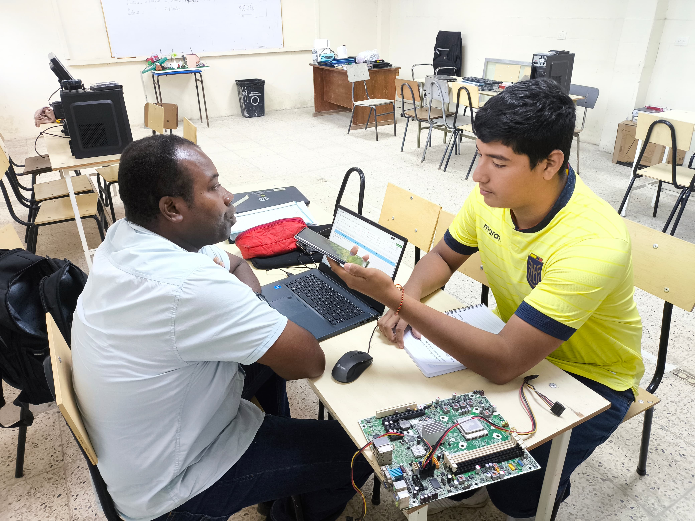
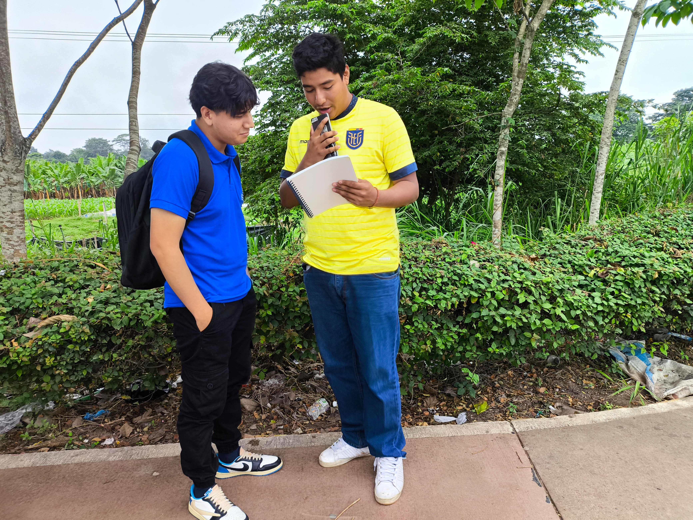
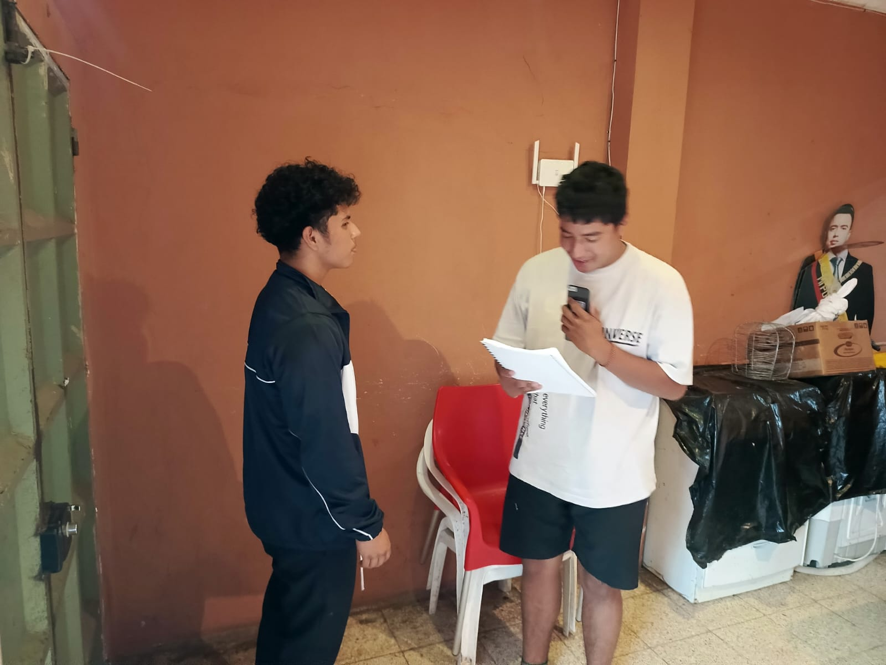

"Pedro Valencia, especialista en la tecnología, analiza su impacto en la educación."
"Rolando Torres, docente en el área de informática, opina sobre el impacto tecnológico."

"Jorge Dávila, exestudiante del tercero B técnico, relata su experiencia con el uso de tecnologías durante su formación académica."

"Santiago Tela, estudiante de tercero A técnico, comenta cómo la tecnología ha influido en su proceso educativo."